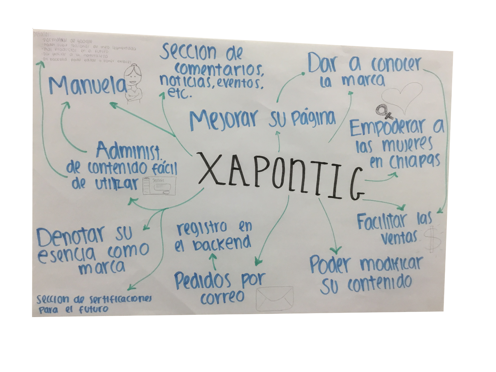

Xapontic produces artisanal soaps through the work of Tseltal women in northern Chiapas. When our university team began the project, the organization did not have its own website. We were asked to create both a customer-facing experience and a backend that could be maintained without editing code.
The central UX question: how do we communicate the women, community and origin behind the product without making it harder to browse and order?
My ownership centered on the front-end experience: wireframes, interactive prototypes, visual UI, responsive layouts, usability testing and HTML/CSS/JavaScript implementation. Backend and database work were primarily owned by another teammate.
